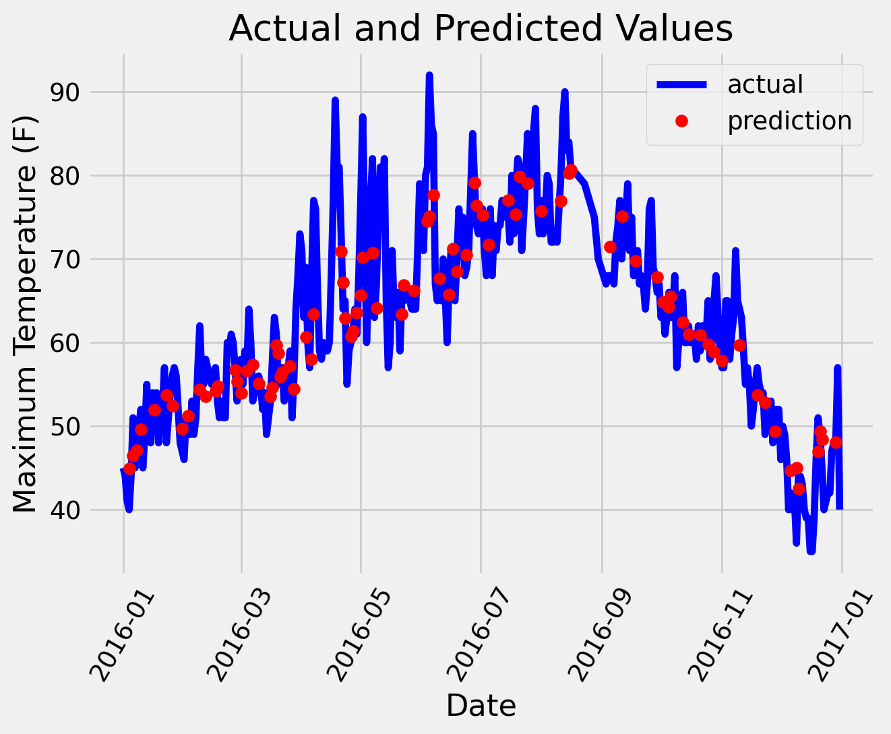

Random forests are a popular supervised machine learning algorithm.
Random forests are for supervised machine learning, where there is a labeled target variable. Random forests can be used for solving regression (numeric target variable) and classification (categorical target variable) problems. Random forests are an ensemble method, meaning they combine predictions from other models. Each of the smaller models in the random forest ensemble is a decision tree.
Code
# Pandas is used for data manipulationimport pandas as pd# Using Skicit-learn to split data into training and testing setsfrom sklearn.model_selection import train_test_split# Import matplotlib for plotting and use magic command for Jupyter Notebooksimport matplotlib.pyplot as plt# Import the model we are usingfrom sklearn.ensemble import RandomForestRegressorimport numpy as npdef predict_by_random_forest(train_features, test_features, train_labels,feature_list):# New random forest with only the two most important variables rf_most_important = RandomForestRegressor(n_estimators=1000, random_state=42)# Extract the two most important features important_indices = [feature_list.index('temp_1'), feature_list.index('average')] train_important = train_features[:, important_indices] test_important = test_features[:, important_indices]# Train the random forest rf_most_important.fit(train_important, train_labels)# Make predictions and determine the error predictions = rf_most_important.predict(test_important)return predictionsdef show_plot(features,feature_list,test_features,labels,predictions,test_labels): errors =abs(predictions - test_labels)# Display the performance metricsprint('Mean Absolute Error:', round(np.mean(errors), 2), 'degrees.') mape = np.mean(100* (errors / test_labels)) accuracy =100- mapeprint('Accuracy:', round(accuracy, 2), '%.')# Set the style plt.style.use('fivethirtyeight')# Use datetime for creating date objects for plottingimport datetime# Dates of training values months = features[:, feature_list.index('month')] days = features[:, feature_list.index('day')] years = features[:, feature_list.index('year')]# List and then convert to datetime object dates = [str(int(year)) +'-'+str(int(month)) +'-'+str(int(day)) for year, month, day inzip(years, months, days)] dates = [datetime.datetime.strptime(date, '%Y-%m-%d') for date in dates]# Dataframe with true values and dates true_data = pd.DataFrame(data = {'date': dates, 'actual': labels})# Dates of predictions months = test_features[:, feature_list.index('month')] days = test_features[:, feature_list.index('day')] years = test_features[:, feature_list.index('year')]# Column of dates test_dates = [str(int(year)) +'-'+str(int(month)) +'-'+str(int(day)) for year, month, day inzip(years, months, days)]# Convert to datetime objects test_dates = [datetime.datetime.strptime(date, '%Y-%m-%d') for date in test_dates]# Dataframe with predictions and dates predictions_data = pd.DataFrame(data = {'date': test_dates, 'prediction': predictions})# Plot the actual values plt.plot(true_data['date'], true_data['actual'], 'b-', label ='actual')# Plot the predicted values plt.plot(predictions_data['date'], predictions_data['prediction'], 'ro', label ='prediction') plt.xticks(rotation =60); plt.legend()# Graph labels plt.xlabel('Date'); plt.ylabel('Maximum Temperature (F)'); plt.title('Actual and Predicted Values')# Read in data and display first 5 rowsfeatures = pd.read_csv('/home/user/research/code/referred/course/website-publish/posts/3linear/temps.csv')features.head(5)# One-hot encode the data using pandas get_dummiesfeatures = pd.get_dummies(features)# Use numpy to convert to arrays# Labels are the values we want to predictlabels = np.array(features['actual'])# Remove the labels from the features# axis 1 refers to the columnsfeatures= features.drop('actual', axis =1)# Saving feature names for later usefeature_list =list(features.columns)# Convert to numpy arrayfeatures = np.array(features)# Split the data into training and testing setstrain_features, test_features, train_labels, test_labels = train_test_split(features, labels, test_size =0.25, random_state =42)predictions=predict_by_random_forest(train_features, test_features, train_labels,feature_list)show_plot(features,feature_list,test_features,labels,predictions,test_labels)
Mean Absolute Error: 3.92 degrees.
Accuracy: 93.76 %.
LinearRegression fits a linear model with coefficients w = (w1, …, wp) to minimize the residual sum of squares between the observed targets in the dataset, and the targets predicted by the linear approximation.
Code
from sklearn.linear_model import LinearRegression# Extract the two most important featuresimportant_indices = [feature_list.index('temp_1'), feature_list.index('average')]train_important = train_features[:, important_indices]test_important = test_features[:, important_indices]# Train the random forestreg = LinearRegression().fit(train_important, train_labels)# Make predictions and determine the errorpredictions = reg.predict(test_important)show_plot(features,feature_list,test_features,labels,predictions,test_labels)
Mean Absolute Error: 3.42 degrees.
Accuracy: 94.63 %.

Source Code
---title: 3. Linear and nonlinear regressionauthor: Barry Menglong Yaodate: '2023-11-29'format: html: code-fold: true code-tools: truecategories: - news - code - analysisjupyter: python3---Random forests are a popular supervised machine learning algorithm.Random forests are for supervised machine learning, where there is a labeled target variable.Random forests can be used for solving regression (numeric target variable) and classification (categorical target variable) problems.Random forests are an ensemble method, meaning they combine predictions from other models.Each of the smaller models in the random forest ensemble is a decision tree.```{python}# Pandas is used for data manipulationimport pandas as pd# Using Skicit-learn to split data into training and testing setsfrom sklearn.model_selection import train_test_split# Import matplotlib for plotting and use magic command for Jupyter Notebooksimport matplotlib.pyplot as plt# Import the model we are usingfrom sklearn.ensemble import RandomForestRegressorimport numpy as npdef predict_by_random_forest(train_features, test_features, train_labels,feature_list):# New random forest with only the two most important variables rf_most_important = RandomForestRegressor(n_estimators=1000, random_state=42)# Extract the two most important features important_indices = [feature_list.index('temp_1'), feature_list.index('average')] train_important = train_features[:, important_indices] test_important = test_features[:, important_indices]# Train the random forest rf_most_important.fit(train_important, train_labels)# Make predictions and determine the error predictions = rf_most_important.predict(test_important)return predictionsdef show_plot(features,feature_list,test_features,labels,predictions,test_labels): errors =abs(predictions - test_labels)# Display the performance metricsprint('Mean Absolute Error:', round(np.mean(errors), 2), 'degrees.') mape = np.mean(100* (errors / test_labels)) accuracy =100- mapeprint('Accuracy:', round(accuracy, 2), '%.')# Set the style plt.style.use('fivethirtyeight')# Use datetime for creating date objects for plottingimport datetime# Dates of training values months = features[:, feature_list.index('month')] days = features[:, feature_list.index('day')] years = features[:, feature_list.index('year')]# List and then convert to datetime object dates = [str(int(year)) +'-'+str(int(month)) +'-'+str(int(day)) for year, month, day inzip(years, months, days)] dates = [datetime.datetime.strptime(date, '%Y-%m-%d') for date in dates]# Dataframe with true values and dates true_data = pd.DataFrame(data = {'date': dates, 'actual': labels})# Dates of predictions months = test_features[:, feature_list.index('month')] days = test_features[:, feature_list.index('day')] years = test_features[:, feature_list.index('year')]# Column of dates test_dates = [str(int(year)) +'-'+str(int(month)) +'-'+str(int(day)) for year, month, day inzip(years, months, days)]# Convert to datetime objects test_dates = [datetime.datetime.strptime(date, '%Y-%m-%d') for date in test_dates]# Dataframe with predictions and dates predictions_data = pd.DataFrame(data = {'date': test_dates, 'prediction': predictions})# Plot the actual values plt.plot(true_data['date'], true_data['actual'], 'b-', label ='actual')# Plot the predicted values plt.plot(predictions_data['date'], predictions_data['prediction'], 'ro', label ='prediction') plt.xticks(rotation =60); plt.legend()# Graph labels plt.xlabel('Date'); plt.ylabel('Maximum Temperature (F)'); plt.title('Actual and Predicted Values')# Read in data and display first 5 rowsfeatures = pd.read_csv('/home/user/research/code/referred/course/website-publish/posts/3linear/temps.csv')features.head(5)# One-hot encode the data using pandas get_dummiesfeatures = pd.get_dummies(features)# Use numpy to convert to arrays# Labels are the values we want to predictlabels = np.array(features['actual'])# Remove the labels from the features# axis 1 refers to the columnsfeatures= features.drop('actual', axis =1)# Saving feature names for later usefeature_list =list(features.columns)# Convert to numpy arrayfeatures = np.array(features)# Split the data into training and testing setstrain_features, test_features, train_labels, test_labels = train_test_split(features, labels, test_size =0.25, random_state =42)predictions=predict_by_random_forest(train_features, test_features, train_labels,feature_list)show_plot(features,feature_list,test_features,labels,predictions,test_labels)```LinearRegression fits a linear model with coefficients w = (w1, …, wp) to minimize the residual sum of squares between the observed targets in the dataset, and the targets predicted by the linear approximation.```{python}from sklearn.linear_model import LinearRegression# Extract the two most important featuresimportant_indices = [feature_list.index('temp_1'), feature_list.index('average')]train_important = train_features[:, important_indices]test_important = test_features[:, important_indices]# Train the random forestreg = LinearRegression().fit(train_important, train_labels)# Make predictions and determine the errorpredictions = reg.predict(test_important)show_plot(features,feature_list,test_features,labels,predictions,test_labels)```